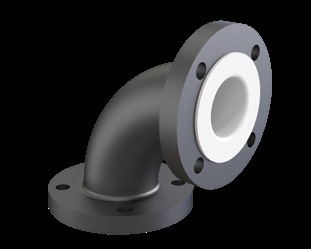
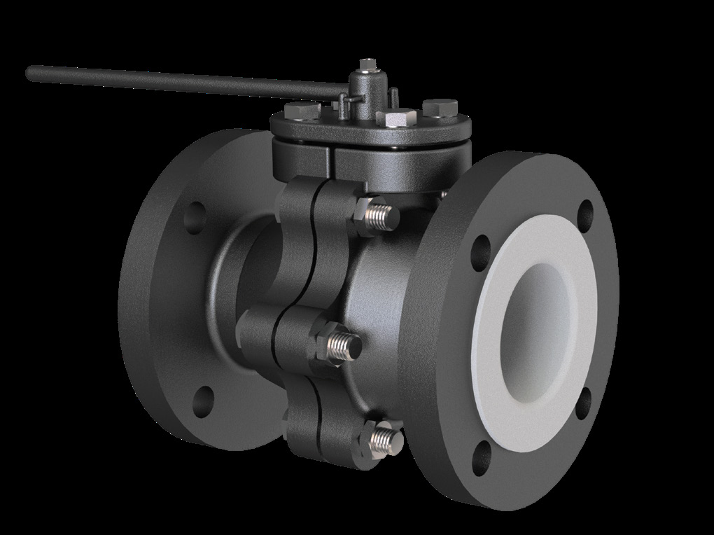
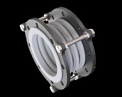
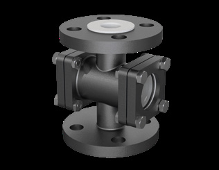

Everything you need for safer, stronger and longer-lasting industrial flow systems — from a single lined spool to a fully engineered valve manifold.

A precision-lined 90° directional change with both flanges fixed as standard.
View Product →
Full-bore PTFE/PFA/FEP lined ball valve for reliable on/off isolation of corrosive fluids.
View Product →
Moulded PTFE expansion bellow absorbing thermal movement and vibration in rigid lined lines.
View Product →
Twin-window sight flow indicator for visual confirmation of flow in lined lines.
View Product →
Three-way branch with all flanges equal in size, all flanges fixed as standard.
View Product →
Fully lined blank flange for closing off a line end.
View Product →Aggressive chemicals shouldn't compromise your operations. Antico designs corrosion-resistant flow solutions that keep critical processes running safely, efficiently and reliably.
From lined pipes and fittings to valves, expansion bellows and customised equipment — we manufacture products engineered for demanding industrial conditions.
See the full range
Every component designed and dimensioned to documented tolerances before it reaches the shop floor.
PTFE, PFA and FEP linings selected for the fluid, temperature and pressure of your specific application.
100% dimensional, spark and hydro/pneumatic pressure testing on every finished component.
Fluoropolymer linings retain their properties under sustained chemical and thermal exposure.
Special fabricated designs, headers and dip pipes engineered to your exact process requirement.
Documented QA plan with document review and witness testing at every manufacturing stage.
Raw materials, lining process and finished components are checked against documented industry standards at every stage.

The base building block of a corrosion-resistant line — straight spool with fixed and lap-joint flange ends.
Continuous exposure to acids, alkalis and solvents demands a lined flow path with zero compromise on containment.
High-purity transfer lines where fluoropolymer inertness protects both process integrity and product quality.
Aggressive hydrocarbons and process chemicals across high-throughput plant piping.
Highly corrosive acids and slurries in fertilizer manufacturing process lines.
Low-volume, high-value chemistries where a single leak is unacceptable.
General corrosive-service process piping across manufacturing plants.
Corrosive leachates and slurry handling in mineral processing.
Flue gas desulphurisation and chemical dosing lines exposed to corrosive media.
Bleaching and pulping chemicals requiring corrosion-resistant transfer.
Corrosive well chemicals and process-side piping in upstream and downstream operations.
Complete in-house manufacturing capability for fluoropolymer lined components — lining accomplished by a state-of-the-art paste extruding process, from computerised design through to final quality testing.
Explore Manufacturing
We review your line drawings, fluid data and process duty conditions.
Isometric drawings and a complete fitting list are prepared for sign-off.
Components are machined, lined and fabricated in-house to spec.
100% dimensional, spark and hydro/pneumatic testing before dispatch.
Packed and dispatched to your site on a confirmed schedule.
Our engineering team stays available for installation queries.
Let's build a safer, stronger and more efficient process together.